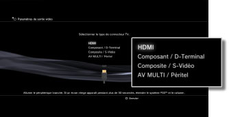
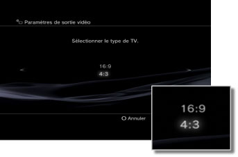
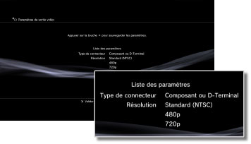

Paramètres de sortie vidéo
Pour régler les paramètres de sortie vidéo du système. Sélectionnez les meilleurs paramètres de sortie pour le téléviseur utilisé.
1. |
Vérifiez la résolution prise en charge par votre téléviseur.
La résolution (mode vidéo) varie en fonction du type de téléviseur. Pour plus de détails, reportez-vous aux instructions qui accompagnent le téléviseur.
|
2. |
Sélectionnez  (Paramètres) > (Paramètres) >  (Paramètres affichage). (Paramètres affichage).
|
3. |
Sélectionnez [Paramètres de sortie vidéo].
|
4. |
Sélectionnez le type de connecteur sur votre téléviseur.
La résolution (mode vidéo) varie en fonction du type de téléviseur utilisé.

| Connecteur d'entrée sur le téléviseur |
Modes vidéo pris en charge (Région NTSC) *1 |
Modes vidéo pris en charge (Région PAL) *1 |
| HDMI |
1080p / 1080i / 720p / 480p |
1080p / 1080i / 720p / 576p |
Composant /
D-Terminal *2 |
1080p / 1080i / 720p / 480p / 480i |
1080p / 1080i / 720p / 576p / 576i |
| Composite / S-Vidéo *3 |
480i |
576i |
| AV MULTI / Péritel *4 |
480p / 480i |
576p / 576i |
| *1 |
Les options du mode vidéo varient en fonction de la région où le système PS3™ a été acheté. En Amérique du Nord, en Asie et dans d'autres régions NTSC, le mode vidéo 480i est affiché comme [Standard (NTSC)]. En Europe et dans d'autres régions PAL, le mode vidéo 576i est affiché comme [Standard (PAL)]. Pour plus de détails, reportez-vous aux instructions qui accompagnent le produit.
|
| *2 |
Le type de connecteur D-terminal est essentiellement utilisé au Japon. Les résolutions suivantes sont prises en charge par D1-D5 :
D5 : 1080p / 720p / 1080i / 480p / 480i
D4 : 1080i / 720p / 480p / 480i
D3 : 1080i / 480p / 480i
D2 : 480p / 480i
D1 : 480i
|
| *3 |
Composite est le connecteur utilisé pour connecter le câble AV fourni avec le système PS3™. S-Vidéo est un format essentiellement utilisé au Japon.
|
| *4 |
AV MULTI est un format essentiellement utilisé au Japon. Péritel est un format essentiellement utilisé en Europe. Si [AV MULTI / Péritel] est sélectionné, l'écran vous permet également de choisir le type de signal de sortie qui doit s'afficher.
|
|
5. |
Modifiez les paramètres de sortie vidéo.
Modifiez la résolution de la sortie vidéo. Selon le type de connecteur sélectionné à l'étape 4, il se peut que cet écran ne s'affiche pas.

|
6. |
Définissez la résolution.
Sélectionnez toutes les résolutions prises en charge par le téléviseur utilisé. La vidéo est automatiquement reproduite dans la résolution la plus élevée pour son contenu, parmi les résolutions sélectionnées.*
*La résolution vidéo est sélectionnée par ordre de priorité comme suit : 1080p > 1080i > 720p > 480p/576p > Standard (NTSC : 480i/PAL : 576i).
Si vous avez sélectionné [Composite / S-Vidéo] à l'étape 4, l'écran de sélection des résolutions n'est pas affiché.
Si [HDMI] est sélectionné, vous pouvez également choisir de régler automatiquement la résolution (le périphérique HDMI doit être activé). Dans ce cas, l'écran de sélection des résolutions n'est pas affiché.

|
7. |
Spécifiez le type de téléviseur.
Sélectionnez le type de téléviseur utilisé. Sélectionnez cette option si seule la résolution SD (NTSC : 480p / 480i, PAL : 576p / 576i) doit être reproduite, par exemple lorsque [Composite / S-Vidéo] ou [AV MULTI / Péritel] est sélectionné à l'étape 4.

|
8. |
Vérifiez vos paramètres.
Confirmez si l'image est affichée à la résolution correcte pour le téléviseur. Vous pouvez revenir à l'écran précédent et revoir les paramètres en appuyant sur la touche  . .

|
9. |
Enregistrez vos paramètres.
Les paramètres de sortie vidéo sont enregistrés sur le système PS3™. Vous pouvez continuer à définir les paramètres de sortie audio. Pour plus d'informations sur la sortie audio, consultez (Paramètres) >  (Paramètres son) > [Paramètres de sortie audio] dans le présent mode d'emploi. (Paramètres son) > [Paramètres de sortie audio] dans le présent mode d'emploi.
|
Conseils
- Il se peut que le câble nécessaire à l'affichage d'un mode vidéo particulier ne soit pas fourni avec le produit et qu'un achat supplémentaire soit requis. Pour plus de détails, reportez-vous à la documentation qui accompagne votre système.
- Si les paramètres de sortie vidéo ne correspondent pas à ceux requis pour le téléviseur utilisé, l'écran peut devenir vierge lorsque la résolution est modifiée. La résolution originale de l'écran devrait toutefois être rétablie automatiquement après un instant. Si l'écran demeure vierge pendant plus de 30 secondes, mettez le système hors tension. Puis, appuyez sur la touche d'alimentation du système pendant plus de cinq secondes pour mettre à nouveau le système sous tension. La résolution standard des paramètres de sortie vidéo est automatiquement rétablie.
- Si vous connectez un périphérique non compatible avec la norme HDCP (High-bandwidth Digital Content Protection) au système à l'aide d'un câble HDMI, les données vidéo et/ou audio ne peuvent pas être reproduites à partir du système.
- Les disques vidéos protégés par droits d'auteur Blu-ray peuvent être reproduits à 1080p en utilisant un câble HDMI connecté à un périphérique compatible avec la norme HDCP.